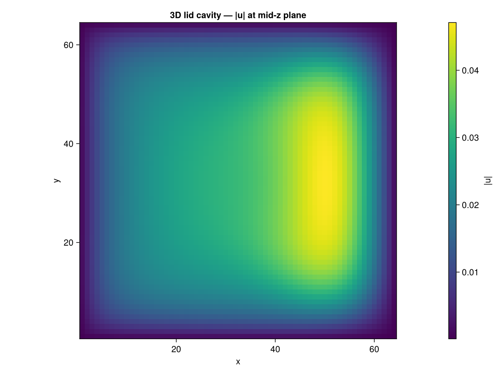
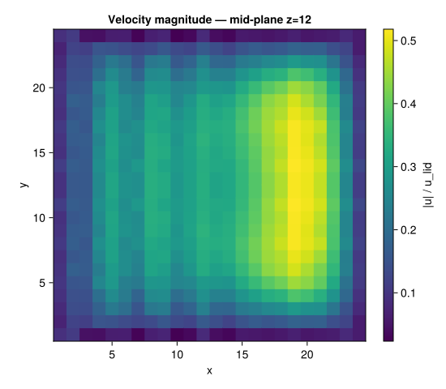

Lid-Driven Cavity (3D) –- D3Q19
Concepts: From 2D to 3D · Boundary conditions
Validates against: Ku, Hirsh & Taylor (1987) — centerline profiles 10.1016/0021-9991(87)90193-8
Download: cavity_3d.krk
Hardware: Apple M2, ~5 min wall-clock at N = 64³ (CPU) / NVIDIA H100, ~30s at N = 64³

Problem Statement
This example extends the classic 2D lid-driven cavity to three dimensions using the D3Q19 lattice. While the physics is conceptually identical –- a moving lid drives a recirculating flow inside a closed box –- the 3D case is dramatically more expensive ($N^3$ nodes instead of $N^2$) and exercises a completely different lattice topology.
From D2Q9 to D3Q19
In 2D, each node has 9 neighbours (including itself). In 3D, the D3Q19 lattice uses 19 velocity directions: 1 rest + 6 face-connected + 12 edge-connected neighbours. This is the standard choice for 3D LBM because it provides a good balance between accuracy and memory cost (the D3Q27 lattice adds 8 corner directions but requires 42% more memory per node).
The streaming, collision, and boundary condition kernels all have 3D counterparts. The key difference is that the Zou–He velocity BC must now handle a 2D face ($N \times N$ nodes on the lid) instead of a 1D line.
What to expect
At $\text{Re} = 100$ the 3D flow is qualitatively similar to 2D: a single primary vortex fills the cavity. However, the 3D solution also has secondary flows in the spanwise direction (perpendicular to the lid motion) that are absent in 2D. These are weak at Re = 100 but become significant at higher Reynolds numbers.
LBM Setup
| Parameter | Value |
|---|---|
| Lattice | D3Q19 |
| Domain | $24 \times 24 \times 24$ |
| Lid BC | Zou–He velocity at $j = N_y$ (lid moves in $x$) |
| Other walls | Half-way bounce-back |
| $\text{Re}$ | 100 |
| $u_\text{lid}$ | 0.1 |
| $\nu$ | $u_\text{lid} \cdot N / \text{Re} = 0.024$ |
| Steps | 30 000 |
We deliberately use a coarse grid ($N = 24$) to keep the documentation build fast. This is sufficient to capture the primary vortex qualitatively, but production runs should use $N \ge 64$ for quantitative validation against reference data.
A D3Q19 simulation with $N^3$ nodes stores 19 populations per node (double precision). At $N = 64$ this is already $19 \times 64^3 \times 8 \approx 40$ MB for a single distribution array. At $N = 256$ it exceeds 40 GB. This is why 3D LBM almost always requires GPU acceleration.
Simulation Code
using Kraken
N = 24
Re = 100
u_lid = 0.1
ν = u_lid * N / Re ## ν = 0.024
config = LBMConfig(D3Q19(); Nx=N, Ny=N, Nz=N, ν=ν, u_lid=u_lid,
max_steps=30000, output_interval=10000)
ρ, ux, uy, uz, _ = run_cavity_3d(config)The function run_cavity_3d performs exactly the same algorithmic steps as the 2D version:
- Stream –- propagate 19 populations to neighbours in 3D
- Bounce-back on the five stationary walls (bottom, front, back, left, right)
- Zou–He on the top face (impose $u_x = u_\text{lid}$, $u_y = u_z = 0$)
- Collide –- BGK relaxation
- Compute macroscopic fields $\rho$, $u_x$, $u_y$, $u_z$
Post-processing
We extract the velocity magnitude in the mid-plane at $z = N/2$ to visualise the primary vortex, and the vertical centreline profile $u_x(y)$ at $(x, z) = (N/2, N/2)$ for comparison with 2D results.
mid = N ÷ 2
# Velocity magnitude in the z = N/2 mid-plane
umag = zeros(N, N)
for j in 1:N, i in 1:N
umag[i, j] = sqrt(ux[i, j, mid]^2 + uy[i, j, mid]^2 + uz[i, j, mid]^2)
end
umag ./= u_lid
# Vertical centreline profile at (x, z) = (N/2, N/2)
ux_profile = [ux[mid, j, mid] / u_lid for j in 1:N]
y_norm = [(j - 0.5) / N for j in 1:N]Results –- Mid-plane Velocity Magnitude
The heatmap below shows $|\mathbf{u}| / u_\text{lid}$ in the $z = N/2$ plane. Even on this coarse 24^3 grid, the primary vortex structure is clearly visible: fast flow near the lid, a relatively quiet core, and return flow along the bottom.
At this resolution the vortex is slightly less well-defined than in the 2D case because of the limited number of grid points. The spanwise confinement (walls at $z = 1$ and $z = N$) also modifies the flow compared to the infinite-span 2D solution.
Plot: Mid-plane velocity magnitude
using CairoMakie
fig = Figure(size=(600, 500))
ax = Axis(fig[1, 1];
title = "Velocity magnitude |u|/u_lid (z = N/2)",
xlabel = "x", ylabel = "y", aspect = DataAspect())
hm = heatmap!(ax, 1:N, 1:N, umag; colormap = :viridis)
Colorbar(fig[1, 2], hm; label = "|u|/u_lid")
save(joinpath(@__DIR__, "cavity_3d_umag.svg"), fig)
fig
Discussion
3D vs 2D differences
- The mid-plane profile of the 3D cavity at Re = 100 is qualitatively similar to the 2D solution, but quantitatively different because of the no-slip walls at $z = 1$ and $z = N$ that slow down the flow in the spanwise direction.
- At $N = 24$, the vertical centreline profile $u_x(y)$ shows the same S-shaped structure as in 2D (positive near the lid, negative in the return flow), but the magnitudes are slightly reduced due to the 3D wall friction.
When to use 3D
For most validation purposes, the 2D cavity is sufficient (and much cheaper). The 3D version is useful for:
- Validating the D3Q19 streaming and collision kernels
- Testing the 3D Zou–He boundary condition
- Benchmarking GPU performance (the 3D problem has much higher arithmetic intensity and better GPU utilisation)
Grid resolution guidelines
| $N$ | Nodes | Memory (D3Q19, f64) | Use case |
|---|---|---|---|
| 24 | 13 824 | ~4 MB | Quick smoke test |
| 64 | 262 144 | ~76 MB | Quantitative (CPU) |
| 128 | 2 097 152 | ~608 MB | Production (GPU) |
| 256 | 16 777 216 | ~4.9 GB | High-Re (GPU only) |
References
- Ghia et al. (1982) –- 2D reference data
- He & Luo (1997) –- Lattice Boltzmann theory
- Qian et al. (1992) –- D2Q9/D3Q19 lattice models
- Kruger et al. (2017) –- LBM textbook